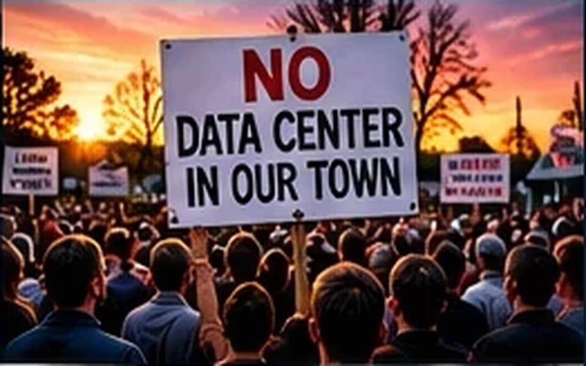

TEXAS | OCTOBER 30, 2026
TEXAS NEIGHBORS RALLY AGAINST GIANT COMPUTER CAMPUSES!
Residents in multiple communities demand answers about proposed data centers.

Opposition to new data centers has spread through parts of Texas as residents seek more information about proposed projects. In Brazoria County, people near Damon raised questions about a potential large facility after learning of land purchases. Elsewhere, local governments are reviewing zoning, infrastructure and environmental questions. Residents say they want clear answers about water, electricity and noise before projects move forward. Developers and local officials point to possible economic benefits. Neither concern should be mistaken for a final decision on any individual project.
Why it matters: Texas readers are watching how large infrastructure decisions affect communities, energy bills and local accountability.
And One More Thing…
In Texas, the only thing louder than a data center cooling fan might be the town hall meeting.